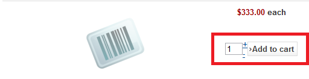
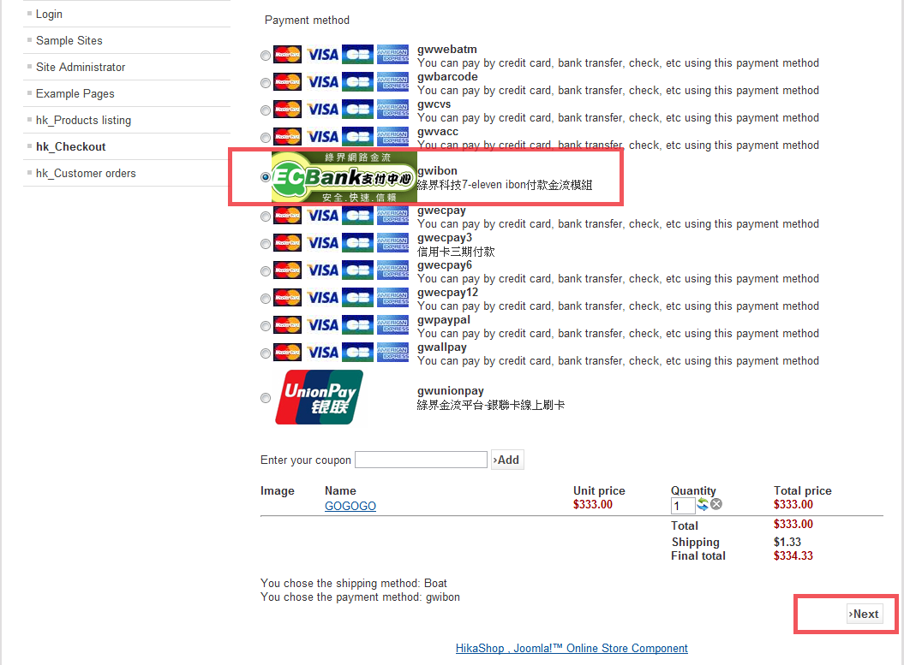
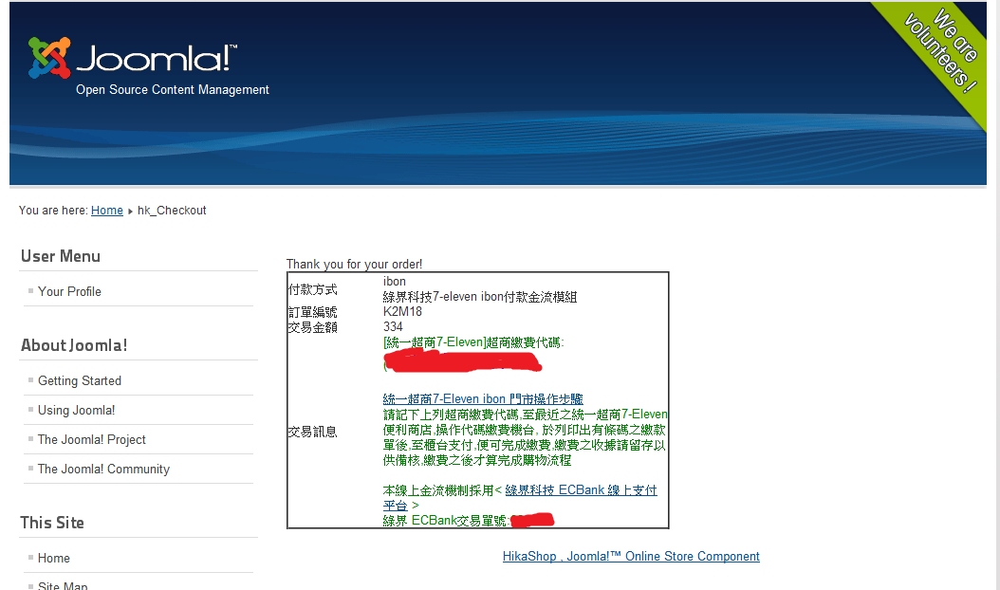
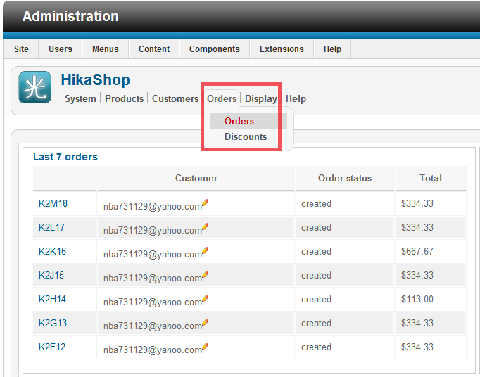
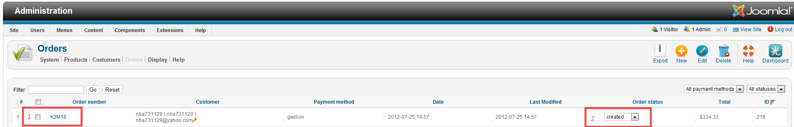
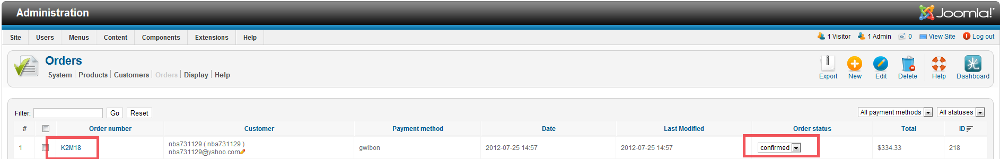

綠界科技線上金流模組安裝教學
Step 2 - 購物流程說明
請先註冊一個會員並且登入
記得在管理後台Hikashop中新增一個送貨方式
1 在Hikashop管理後台中先新增一項商品為範例，之後再到前台中選擇數量並『加入到購物車』

2 選取一個付款方式(在這以ibon為例)，之後按下Next按鈕

3 確認訂單號，成功取號

4 登入後台，看訂單是否成立，此時訂單狀態為『created』


4 登入您的Ecbank管理後台找到該訂單執行模擬觸發(模擬消費者成功付款)
5 當消費者成功付款後管理者至後台中查看訂單狀態，已變更為『confirmed』
